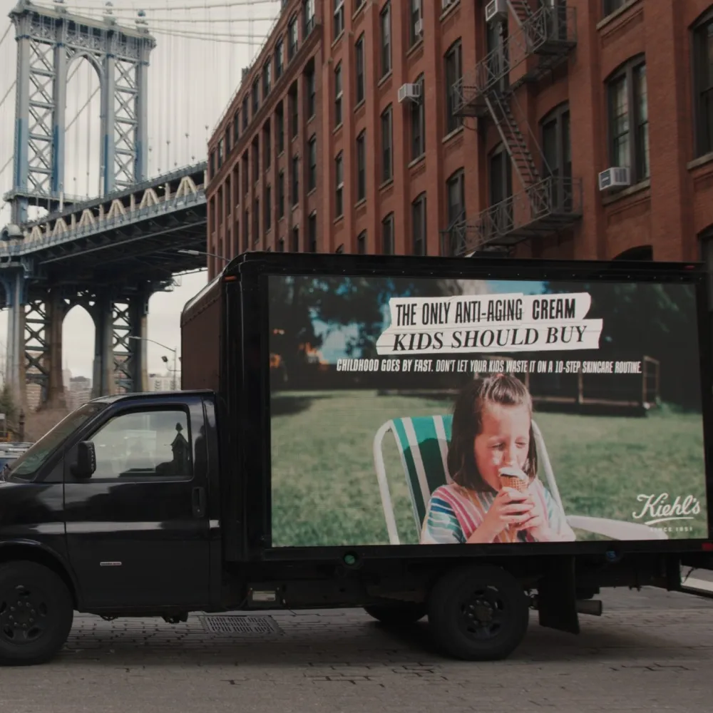
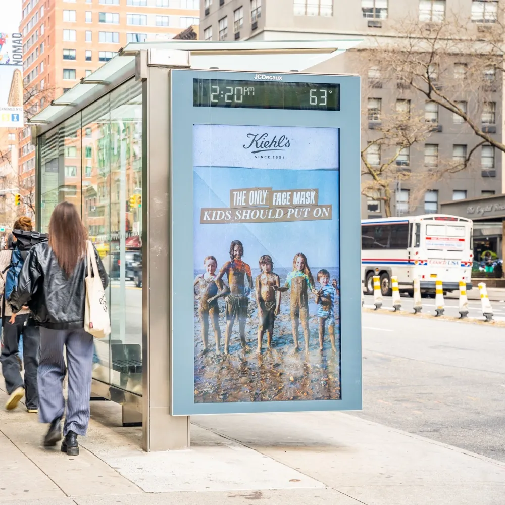
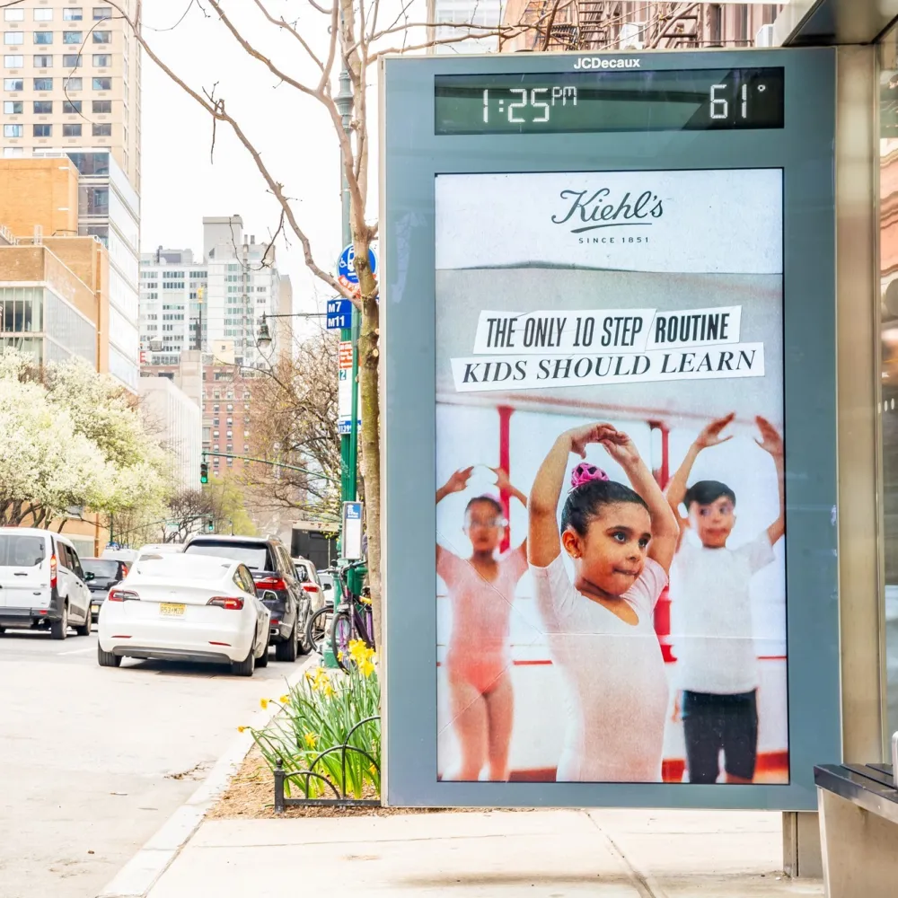

01
Kiehl's Kids
Out of home · New York
Disruptive content on New York billboards, bus shelters, wheatpaste walls and a truck. The truck carried the line that sums it up: “Childhood goes by fast. Don’t let your kids waste it on a 10-step skincare routine.”
Out of home


